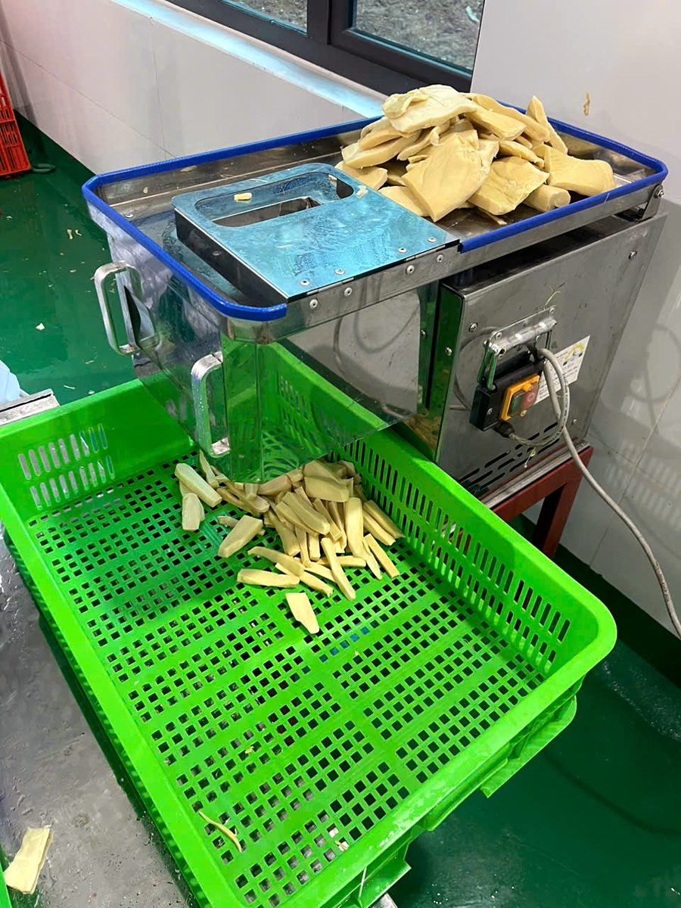
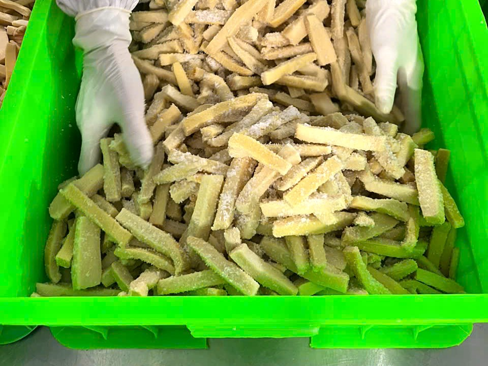
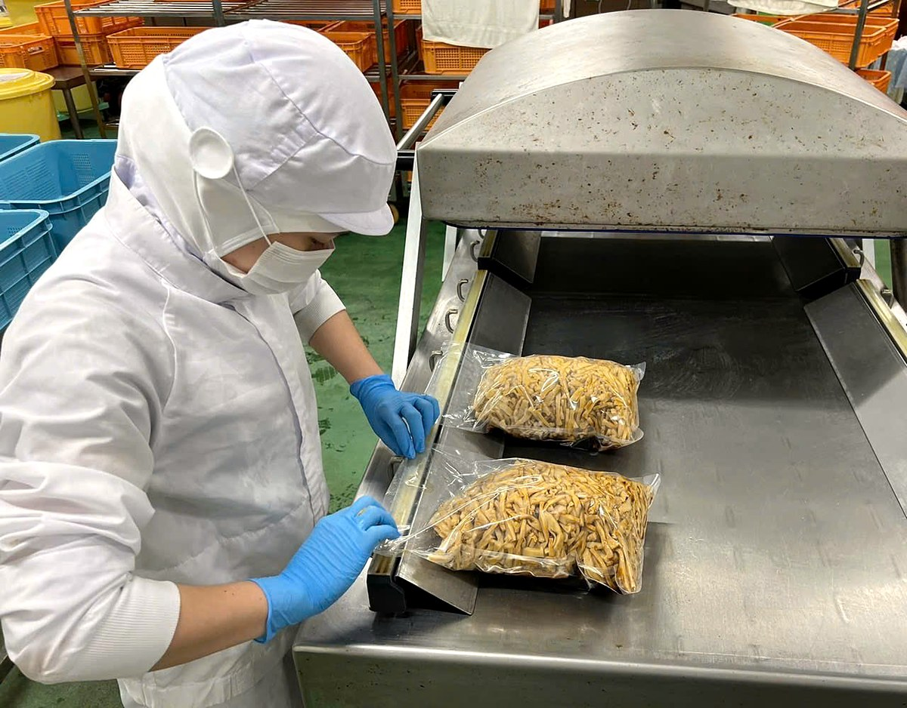

Măng tươi chỉ có theo mùa và nhanh xuống chất lượng nếu để lâu. Ủ muối là cách người làm măng giữ búp măng qua nhiều tháng. Tại xưởng Vũ Điền ở Đan Thượng, cách làm truyền thống của người dân vùng Đất Tổ được làm theo quy trình của xưởng, với thiết bị như máy hút chân không và khu sơ chế riêng.
Dưới đây là các bước chính để tạo ra măng ủ muối – sản phẩm mà quán ramen gọi là nguyên liệu menma, đồng thời là nguyên liệu đầu vào của măng đóng túi.
1. Lên kế hoạch thu hoạch và tiếp nhận măng tươi
HTX lên kế hoạch thu hoạch theo kế hoạch sản xuất, chỉ thu đủ số lượng cần. Măng tươi được đưa về xưởng tại Khu 4, xã Đan Thượng sớm nhất có thể để giữ độ tươi.
2. Phân loại
Tổ sản xuất chọn và phân loại măng theo kích cỡ.
3. Sơ chế
Măng được sơ chế và cắt theo quy cách của đơn hàng – vui lòng hỏi xưởng kiểu cắt đang nhận. Ở xưởng, công nhân đo độ dày miếng măng bằng thước đo để các miếng cắt đều nhau.
4. Ủ muối
Đây là bước chính. Măng được trộn muối rồi ủ tại xưởng theo quy trình của xưởng. Qua bước này, măng tươi trở thành măng ủ muối.
Măng ủ muối của Vũ Điền Farm là măng chưa tẩm vị. Chúng tôi giữ măng ở trạng thái nguyên liệu để bếp tự xả muối và nêm theo công thức của quán.
5. Với măng đóng túi: chuẩn bị măng đóng túi
Một phần măng ủ muối được chuyển sang làm măng đóng túi: măng được xả muối và xử lý cho nở theo quy trình của xưởng, khối lượng tăng khoảng 2,3 lần so với măng ủ muối ban đầu.
6. Cân, hút chân không, ghi lô
Măng được cân theo khối lượng tịnh, cho vào túi, hút chân không và hàn kín miệng túi. Trên mỗi túi có ngày sản xuất, hạn sử dụng và số lô. Túi nhà hàng hiện là 3–5 kg; túi bán lẻ 300 g và 500 g sắp có.
7. Lưu kho thành phẩm
Thành phẩm được xếp trong kho thành phẩm của xưởng, ở nhiệt độ thường. Măng ủ muối và măng đóng túi có hạn sử dụng 12 tháng. HTX sản xuất theo đơn đặt hàng, hạn chế tồn kho lâu.
Điều quy trình này mang lại cho bếp
- Một nguồn măng dùng quanh năm, không phụ thuộc mùa măng tươi.
- Quy cách rõ ràng: kiểu cắt, khối lượng túi, ngày sản xuất và số lô ghi trên túi.
- Dễ trữ kho: không chiếm chỗ tủ mát.
Xưởng đang cung ứng cho khách hàng Nhật và mở rộng cung ứng cho nhà hàng, nhà phân phối trong nước. Xem chi tiết sản phẩm tại Măng ủ muối và Măng đóng túi, hoặc liên hệ – gọi/Zalo 0986 564 343 để hỏi kiểu cắt và quy cách.
Hình ảnh tại xưởng


